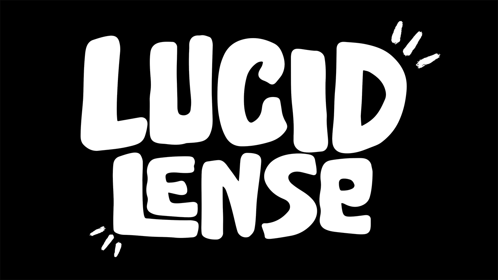
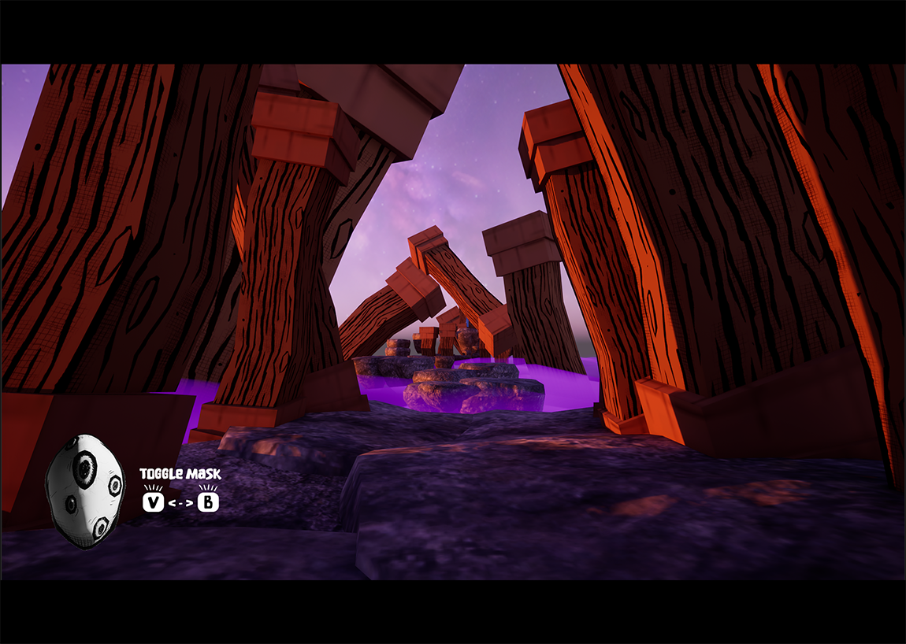
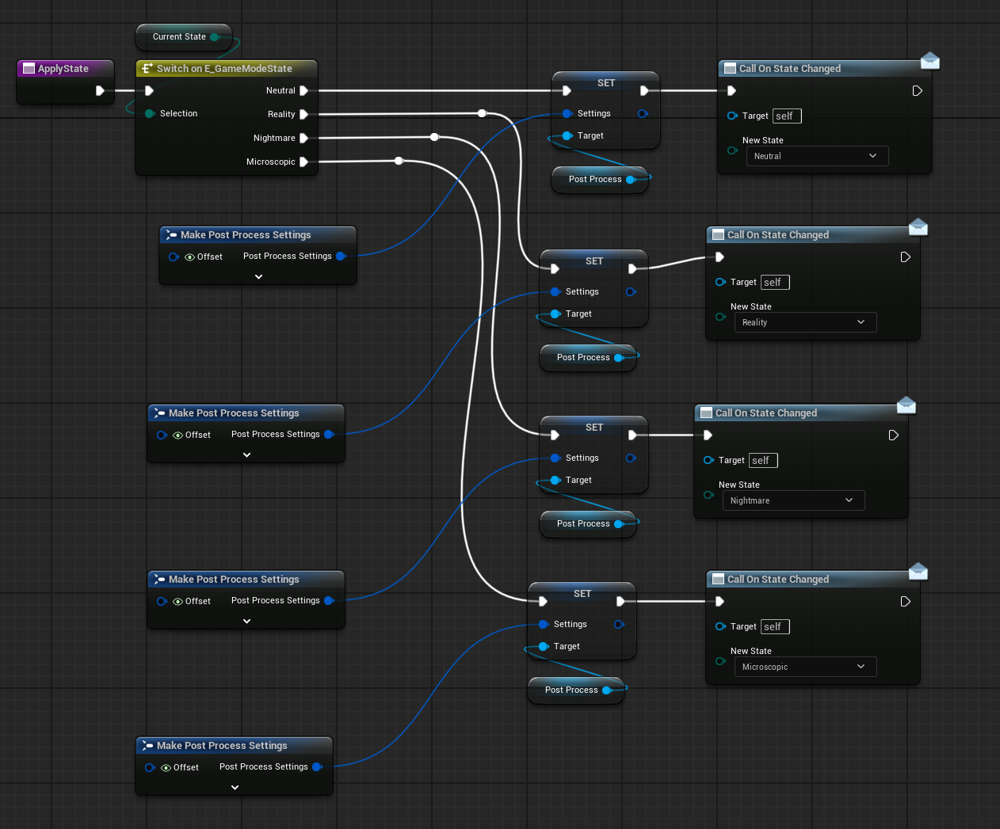
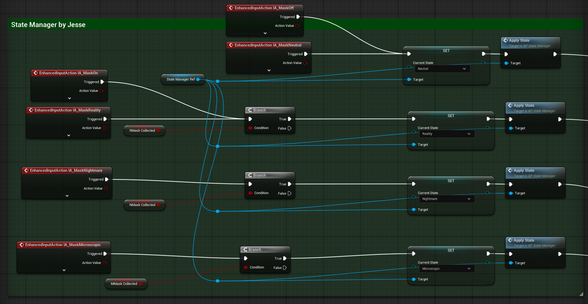
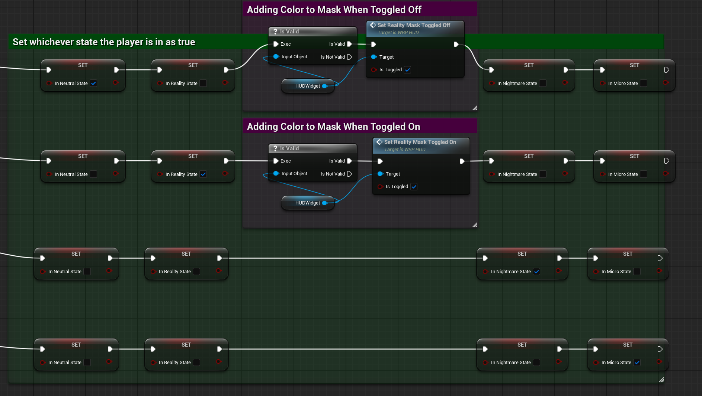
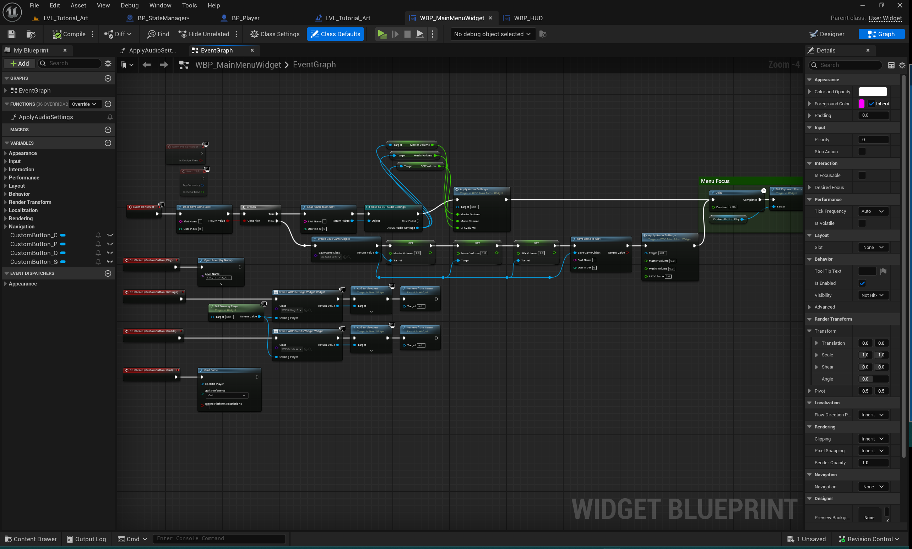
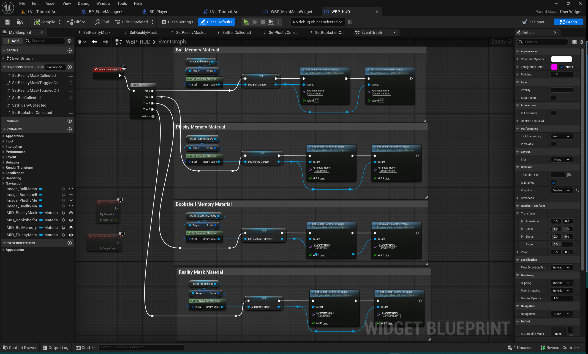

Lucid Lens — State-Driven Gameplay & UI
A collaborative Unreal Engine project exploring perception, interaction, and state-driven gameplay through mask-based mechanics. My work focused on Blueprint state management, UI systems, and ensuring clear, consistent UX across gameplay modes.

Concept & Design Challenge
Lucid Lens is a narrative-driven game where a child awakens inside a world that behaves like a lucid dream. The player must navigate this surreal space by equipping one of three masks, each of which alters how the environment is perceived and interacted with.
These masks are not cosmetic effects. Each represents a distinct gameplay state that changes:
- Visual presentation of the world
- Which objects can be interacted with
- Player feedback and HUD elements
- Overall player expectations and navigation
The core technical challenge was ensuring these transitions felt intentional, readable, and consistent—without duplicating logic or allowing systems to drift out of sync.




Gameplay State System
My primary responsibility on Lucid Lens was the design and implementation of a centralized gameplay state manager.
Rather than distributing conditional logic across the Player Blueprint, UI widgets, and world actors, I implemented a single authoritative system responsible for:
- Tracking the current gameplay state
- Handling transitions between mask modes
- Broadcasting state changes to dependent systems
This approach ensured that mask switching, UI behavior, and pause logic all remained deterministic and easy to reason about.
State Manager Architecture (Blueprint)

The State Manager is implemented as a dedicated Blueprint actor that owns the game’s current state and applies all state transitions.
Gameplay states are defined using an enum, allowing systems to react based on intent rather than ad-hoc boolean checks.
- Neutral
- Reality Mask
- Nightmare Mask
- Microscopic Mask
When a state transition occurs, the manager applies the appropriate post-process settings, updates internal state, and dispatches an event to listening systems such as the Player, HUD, and UI widgets.
Player Integration & Mask Switching


The Player Blueprint does not directly manipulate visuals, UI, or world behavior. Instead, player input is translated into clear state-change requests sent to the State Manager.
This separation keeps player logic readable and prevents feature creep as new masks or interactions are introduced.
UI Systems & UX Flow
I also worked extensively on the game’s UI systems, focusing on clarity, feedback, and consistency across gameplay states.
UI widgets do not execute gameplay logic or poll for state. Instead, they respond to events broadcast by the State Manager, keeping UI presentation- focused and decoupled from gameplay systems.
Menus & Pause Flow

The pause menu was designed to cleanly interrupt gameplay without breaking state consistency.
- Input is gated while paused
- Cursor and focus modes are explicitly controlled
- Gameplay resumes only after state restoration
This prevents edge cases such as unintended input carryover or mismatched UI and gameplay states.
HUD & Visual Feedback

HUD elements respond dynamically to gameplay state using material parameter changes rather than widget duplication.
This allows visual feedback—such as memory indicators and mask effects—to update smoothly as states toggle on or off, reinforcing gameplay without overwhelming the player.
Play Lucid Lens
Lucid Lens is playable on itch.io as a game jam build. This version demonstrates the mask-based gameplay states, UI systems, and interaction flow described above.
What I Learned
-
Centralized state ownership prevents bugs
A single authority for state changes eliminates desynchronization. -
UI should react, not decide
Separating presentation from gameplay logic keeps systems scalable. -
Blueprints benefit from architectural thinking
Clear data flow and intent-based design outperform ad-hoc visual scripting.